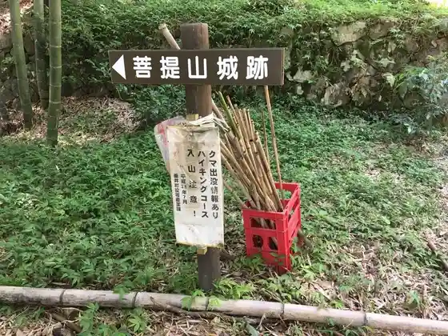
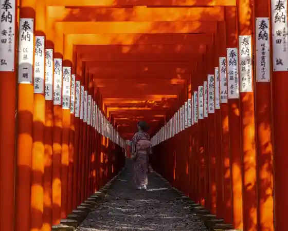
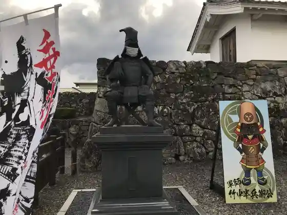
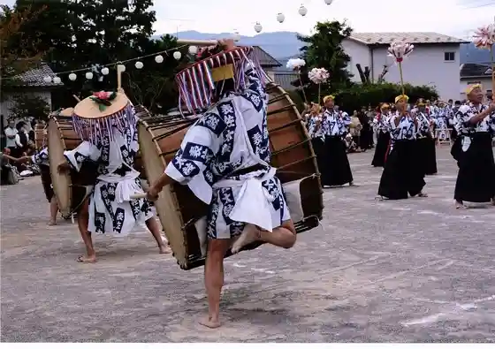

Bodai Yama Castle Ruins
Tarui, Gifu · 0584-22-1151 · Official / source link
Bodai Yamashiro Ato Haikingukosu
Tarui, Gifu · 0584-22-1151 · Official / source link

Nangu Taisha
Tarui, Gifu · 0584-22-1225 · Official / source link

Takenaka Shi Jinya Ato (Iwate Castle Ruins)
Tarui, Gifu · Official / source link

Omote Sata Tsuzumi Odori
Tarui, Gifu · 0584-23-2020 · Official / source link

Oishi Festival
Tarui, Gifu · 0584-22-1151 · Official / source link
Nangu Yama Haikingukosu
Tarui, Gifu · 0584-22-1151 · Official / source link
Tarui Ei Yama Festival
Tarui, Gifu · 0584-23-2020 · Official / source link
Zen to Tera
Tarui, Gifu · 0584-23-0129 · Official / source link
Nakasendo Tarui Yado
Tarui, Gifu · 0584-23-2020 · Official / source link
Aikawa Koi no Bori Issei Yuei
Tarui, Gifu · Official / source link
I Tomi Shi Shrine
Tarui, Gifu · Official / source link
Mori Hidemoto Jin'ato
Tarui, Gifu · Official / source link
Myojin Mizumi
Tarui, Gifu · 0584-23-2020 · Official / source link
Kuroda Nagamasa O Teue E no Icho no Ki Gomyo Inari Shrine
Tarui, Gifu · Official / source link
Seiga Memorial Museum
Tarui, Gifu · 0584-22-1007 · Official / source link
Chosogabe Joshin Jin'ato
Tarui, Gifu · Official / source link
Tarui Castle Ruins
Tarui, Gifu · 0584-22-1802 · Official / source link
Kurihara Tsukumo Bo Ato (Chosogabe Joshin Jin'ato)
Tarui, Gifu · Official / source link
Nangu Taisha Hana Chozu Hana Chozu Teicha Seki
Tarui, Gifu · 0584-22-1225 · Official / source link
Kuni Historic Site Mino Ko Ato
Tarui, Gifu · Official / source link
Taruipia Center Folk History Museum
Tarui, Gifu · 0584-23-3746 · Official / source link
Yoshikawa Hiroie Jin'ato
Tarui, Gifu · Official / source link
Nakasendo to Mino Michi Tarui Oiwake Dohyo
Tarui, Gifu · Official / source link
Ikeda Terumasa Jin'ato Haruo Yasuo Haka
Tarui, Gifu · Official / source link
Aikawa Suihen Park Cherry Blossoms
Tarui, Gifu · 0584-22-1151 · Official / source link
Ankokuji Ekei Jin'ato
Tarui, Gifu · Official / source link
Nangu Taisha Rei Taisai
Tarui, Gifu · 0584-23-2020 · Official / source link
Ibuki Matsuri
Tarui, Gifu · 0584-22-1151 · Official / source link
Nagatsuka Masaie Jin'ato
Tarui, Gifu · Official / source link
Asakura Yama Makoto Zen'in
Tarui, Gifu · 0584-22-2212 · Official / source link
Tarui Ichiri Tsuka Chadokoro
Tarui, Gifu · Official / source link
Renri no Sakaki
Tarui, Gifu · 0584-23-2020 · Official / source link
Hotaru Festival (Iwate)
Tarui, Gifu · 0584-22-1007 · Official / source link
Mino Michi no Matsunami Ki
Tarui, Gifu · Official / source link
Asano Yoshinaga Jin'ato
Tarui, Gifu · Official / source link